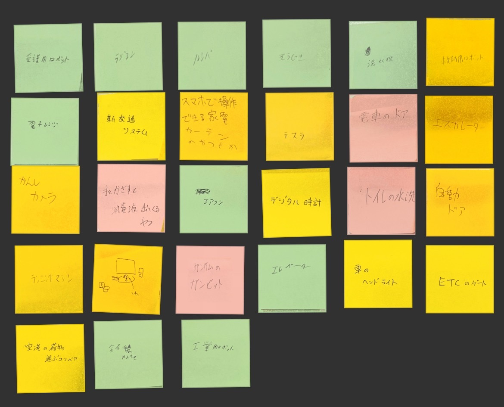
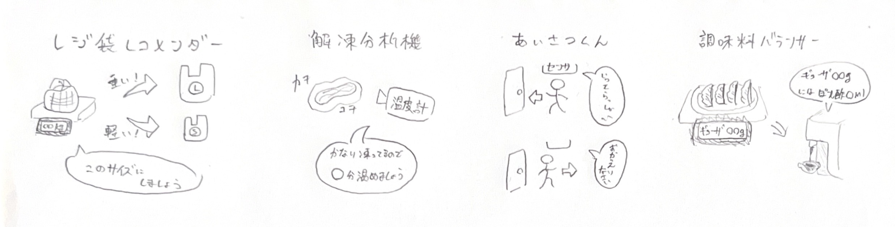

プログラミングで動くモノ

グループであがった「プログラミングで動くモノ 」の案 ▼
グループであがった「
愛護用ロボット、ラジコン、ルンバ、掃除機、洗濯機、救助用ロボット、電子レンジ、新交通システム、スマホで操作できる家電、テスラ、電車のドア、エスカレーター、監視カメラ、ディスペンサー、エアコン、デジタル時計、水洗トイレ、自動ドア、ランニングマシン、センサー式蛇口、ガンダムのガンビット、エレベーター、ヘッドライト、ETC、空港の荷物運搬システム、金属探知機、工業用ロボット
プログラミングの手順
①エアコン
温度センサーで室温を測る
▼
設定温度を...
満たしている ▷ そのままの強さで運転
満たしていない ▷ より強く運転
▼
温度センサーで室温を測る（繰り返し）
②新交通システム▼
設定温度を...
▼
温度センサーで室温を測る（繰り返し）
ドアを閉めて発車
▼
次の駅が何番目の駅なのか確認
▼
指定された距離のポイントで加速・減速
▼
到着した駅に応じて右ドアを開く・左ドアを開く
▼
指定時間後ドアを閉めて発車（繰り返し）
③センサー式蛇口▼
次の駅が何番目の駅なのか確認
▼
指定された距離のポイントで
▼
到着した駅に応じて
▼
指定時間後ドアを閉めて発車（繰り返し）
感知センサーを作動
▼
センサーの反応が...
ある ▷ 反応がなくなるまで水を出す
ない ▷ 何も出さない
▼
感知センサーを作動（繰り返し）
▼
センサーの反応が...
▼
感知センサーを作動（繰り返し）
プログラミングのアイデア

①レジ袋レコメンダー
買い物かごの重量によってちょうどいいレジ袋のサイズをおすすめしてくれる。
②解凍分析機
冷凍したものの温度によってピッタリな解凍時間を教えてくれる。
③あいさつくん
センサーで人を感知し、方向によって「いってらっしゃい」と「ただいま」を言ってくれる。
④調味料バランサー
選択した料理の重さを量り、それに合った調味料をちょうどいい量出してくれる。
①
買い物かごの重量によってちょうどいいレジ袋のサイズをおすすめしてくれる。
冷凍したものの温度によってピッタリな解凍時間を教えてくれる。
センサーで人を感知し、方向によって「いってらっしゃい」と「ただいま」を言ってくれる。
選択した料理の重さを量り、それに合った調味料をちょうどいい量出してくれる。